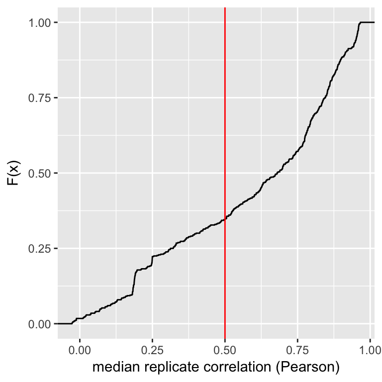

Predict compounds mechanism-of-action by morphological profiling
Allen Goodman and Shantanu Singh
2017-10-03
This vignette demonstrates predicting compound mechanism-of-action using morphological profiling data. See the vignette single_cell_analysis for details about this dataset.
library(dplyr)
library(magrittr)
library(ggplot2)
library(stringr)
library(cytominergallery)Load data
Per-well profiles computed in single_cell_analysis are loaded, as well as metadata associated with these profiles (obtained from BBBC021)
profiles <-
readr::read_csv(system.file("extdata", "ljosa_jbiomolscreen_2013_per_well_mean.csv",
package = "cytominergallery"))
moa <-
readr::read_csv(system.file("extdata", "BBBC021_v1_moa.csv",
package = "cytominergallery")) %>%
rename(Image_Metadata_Compound = compound,
Image_Metadata_Concentration = concentration,
Image_Metadata_MoA = moa
)
metadata <-
readr::read_csv(system.file("extdata", "BBBC021_v1_image.csv",
package = "cytominergallery")) %>%
rename(Image_Metadata_Plate = Image_Metadata_Plate_DAPI,
Image_Metadata_Well = Image_Metadata_Well_DAPI
) %>%
select(matches("^Image_Metadata")) %>%
inner_join(moa) %>%
distinct()
profiles %<>%
inner_join(metadata)
variables <-
colnames(profiles) %>%
str_subset("^Nuclei_|^Cells_|^Cytoplasm_")How many compounds?
profiles %>%
filter(Image_Metadata_Compound != "DMSO") %>%
distinct(Image_Metadata_Compound) %>%
tally() %>%
rename(`Number of compounds` = n) %>%
knitr::kable()| Number of compounds |
|---|
| 38 |
How many unique treatments (compound-concentration pairs)?
profiles %>%
filter(Image_Metadata_Compound != "DMSO") %>%
distinct(Image_Metadata_Compound, Image_Metadata_Concentration) %>%
tally() %>%
rename(`Number of unique treatments` = n) %>%
knitr::kable()| Number of unique treatments |
|---|
| 103 |
How many replicates per unique treatment?
profiles %>%
filter(Image_Metadata_Compound != "DMSO") %>%
count(Image_Metadata_Compound, Image_Metadata_Concentration) %>%
rename(`Number of replicates` = n) %>%
knitr::kable()| Image_Metadata_Compound | Image_Metadata_Concentration | Number of replicates |
|---|---|---|
| ALLN | 3.000 | 3 |
| ALLN | 100.000 | 3 |
| alsterpaullone | 1.000 | 2 |
| alsterpaullone | 3.000 | 2 |
| anisomycin | 0.300 | 3 |
| anisomycin | 1.000 | 3 |
| AZ-A | 0.100 | 3 |
| AZ-A | 0.300 | 3 |
| AZ-A | 1.000 | 3 |
| AZ-A | 3.000 | 3 |
| AZ-A | 10.000 | 3 |
| AZ-A | 30.000 | 3 |
| AZ-C | 0.001 | 3 |
| AZ-C | 0.003 | 3 |
| AZ-C | 0.010 | 3 |
| AZ-C | 0.030 | 3 |
| AZ-C | 0.100 | 3 |
| AZ-C | 0.300 | 3 |
| AZ-C | 1.000 | 3 |
| AZ-J | 1.000 | 3 |
| AZ-J | 3.000 | 3 |
| AZ-J | 10.000 | 3 |
| AZ-U | 1.000 | 3 |
| AZ-U | 3.000 | 3 |
| AZ-U | 10.000 | 3 |
| AZ138 | 0.030 | 3 |
| AZ138 | 0.100 | 3 |
| AZ138 | 0.300 | 3 |
| AZ138 | 1.000 | 3 |
| AZ138 | 3.000 | 3 |
| AZ258 | 0.100 | 3 |
| AZ258 | 0.300 | 3 |
| AZ258 | 1.000 | 3 |
| AZ841 | 0.100 | 3 |
| AZ841 | 0.300 | 3 |
| AZ841 | 1.000 | 3 |
| bryostatin | 0.300 | 2 |
| camptothecin | 0.003 | 3 |
| camptothecin | 0.010 | 3 |
| camptothecin | 0.030 | 3 |
| chlorambucil | 10.000 | 3 |
| cisplatin | 10.000 | 3 |
| colchicine | 0.030 | 3 |
| cyclohexamide | 5.000 | 3 |
| cyclohexamide | 15.000 | 3 |
| cyclohexamide | 50.000 | 3 |
| cytochalasin B | 10.000 | 3 |
| cytochalasin B | 30.000 | 3 |
| cytochalasin D | 0.300 | 3 |
| demecolcine | 0.300 | 3 |
| demecolcine | 1.000 | 3 |
| demecolcine | 3.000 | 3 |
| demecolcine | 10.000 | 3 |
| docetaxel | 0.030 | 3 |
| docetaxel | 0.100 | 3 |
| docetaxel | 0.300 | 3 |
| emetine | 0.100 | 3 |
| emetine | 0.300 | 3 |
| emetine | 1.000 | 3 |
| epothilone B | 0.100 | 3 |
| epothilone B | 0.300 | 3 |
| epothilone B | 1.000 | 3 |
| etoposide | 1.000 | 3 |
| etoposide | 3.000 | 3 |
| etoposide | 10.000 | 3 |
| floxuridine | 10.000 | 3 |
| floxuridine | 30.000 | 3 |
| lactacystin | 10.000 | 3 |
| latrunculin B | 1.000 | 3 |
| latrunculin B | 3.000 | 3 |
| methotrexate | 10.000 | 3 |
| mevinolin/lovastatin | 1.500 | 3 |
| mevinolin/lovastatin | 5.000 | 3 |
| mevinolin/lovastatin | 15.000 | 3 |
| MG-132 | 0.100 | 3 |
| MG-132 | 3.000 | 3 |
| mitomycin C | 0.100 | 3 |
| mitomycin C | 0.300 | 3 |
| mitomycin C | 1.000 | 3 |
| mitomycin C | 3.000 | 3 |
| mitoxantrone | 0.003 | 3 |
| mitoxantrone | 0.010 | 3 |
| nocodazole | 1.000 | 3 |
| nocodazole | 3.000 | 3 |
| PD-169316 | 3.000 | 2 |
| PD-169316 | 10.000 | 2 |
| PP-2 | 3.000 | 2 |
| PP-2 | 10.000 | 2 |
| proteasome inhibitor I | 0.100 | 3 |
| proteasome inhibitor I | 3.000 | 3 |
| simvastatin | 2.000 | 3 |
| simvastatin | 6.000 | 3 |
| simvastatin | 20.000 | 3 |
| taxol | 0.300 | 3 |
| taxol | 1.000 | 3 |
| taxol | 3.000 | 3 |
| vincristine | 0.003 | 3 |
| vincristine | 0.010 | 3 |
| vincristine | 0.030 | 3 |
| vincristine | 0.100 | 3 |
| vincristine | 0.300 | 3 |
| vincristine | 1.000 | 3 |
| vincristine | 3.000 | 3 |
How many DMSO wells per plate?
profiles %>%
filter(Image_Metadata_Compound == "DMSO") %>%
count(Image_Metadata_Plate) %>%
rename(`Number of DMSO wells` = n) %>%
knitr::kable()| Image_Metadata_Plate | Number of DMSO wells |
|---|---|
| Week1_22123 | 6 |
| Week1_22141 | 6 |
| Week1_22161 | 6 |
| Week1_22361 | 6 |
| Week1_22381 | 6 |
| Week1_22401 | 6 |
| Week10_40111 | 6 |
| Week10_40115 | 6 |
| Week10_40119 | 6 |
| Week2_24121 | 6 |
| Week2_24141 | 6 |
| Week2_24161 | 6 |
| Week2_24361 | 6 |
| Week2_24381 | 6 |
| Week2_24401 | 6 |
| Week3_25421 | 6 |
| Week3_25441 | 6 |
| Week3_25461 | 6 |
| Week3_25681 | 6 |
| Week3_25701 | 6 |
| Week3_25721 | 6 |
| Week4_27481 | 6 |
| Week4_27521 | 6 |
| Week4_27542 | 6 |
| Week4_27801 | 6 |
| Week4_27821 | 6 |
| Week4_27861 | 6 |
| Week5_28901 | 6 |
| Week5_28921 | 6 |
| Week5_28961 | 6 |
| Week5_29301 | 6 |
| Week5_29321 | 6 |
| Week5_29341 | 6 |
| Week6_31641 | 6 |
| Week6_31661 | 6 |
| Week6_31681 | 6 |
| Week6_32061 | 6 |
| Week6_32121 | 6 |
| Week6_32161 | 6 |
| Week7_34341 | 6 |
| Week7_34381 | 6 |
| Week7_34641 | 6 |
| Week7_34661 | 6 |
| Week7_34681 | 6 |
| Week8_38203 | 6 |
| Week8_38221 | 6 |
| Week8_38241 | 6 |
| Week8_38341 | 6 |
| Week8_38342 | 6 |
| Week9_39206 | 6 |
| Week9_39221 | 6 |
| Week9_39222 | 6 |
| Week9_39282 | 6 |
| Week9_39283 | 6 |
| Week9_39301 | 6 |
Feature selection
Next, lets filter the set of features based on various measures of quality
Remove features that have near-zero variance. This dataset doesn’t have any such features, so nothing is removed.
profiles <-
cytominer::variable_select(
population = profiles,
variables = variables,
sample = profiles,
operation = "variance_threshold"
) %>%
collect()
variables <-
colnames(profiles) %>%
str_subset("^Nuclei_|^Cells_|^Cytoplasm_")Remove features that have poor correlation across replicates. To do so, lets first compute the correlations.
doParallel::registerDoParallel(cores = 2)
feature_replicate_correlations <-
profiles %>%
cytominer::variable_importance(
variables = variables,
strata = c("Image_Metadata_Compound", "Image_Metadata_Concentration"),
replicates = 3,
cores = 2)What the does the distribution look like?
ggplot(feature_replicate_correlations, aes(median)) +
stat_ecdf() +
geom_vline(xintercept = 0.5, color = "red") +
xlab("median replicate correlation (Pearson)") +
ylab("F(x)")
Here, we select a threshold and remove features that have a replicate correlation lower than that threshold
profiles %<>%
select_(.dots = setdiff(x = colnames(profiles),
y = feature_replicate_correlations %>%
filter(median < 0.5) %>%
magrittr::extract2("variable"))
)
variables <-
colnames(profiles) %>%
str_subset("^Nuclei_|^Cells_|^Cytoplasm_")Filter based on correlation between features. The morphological features extracted contain several highly correlated groups. We want to to prune the set of features, retaining only one feature from each of these highly correlated sets. The function correlation_threshold provides an approximate (greedy) solution to this problem. After excluding the features, no pair of features have a correlation greater than cutoff indicated below.
profiles <-
cytominer::variable_select(
population = profiles,
variables = variables,
sample = profiles,
operation = "correlation_threshold",
cutoff = 0.95) %>%
collect()## INFO [2017-10-03 20:19:35] excluded:
## INFO [2017-10-03 20:19:35] Cells_AreaShape_MaximumRadius
## INFO [2017-10-03 20:19:35] Cells_AreaShape_MeanRadius
## INFO [2017-10-03 20:19:35] Cells_AreaShape_MedianRadius
## INFO [2017-10-03 20:19:35] Cells_AreaShape_MinFeretDiameter
## INFO [2017-10-03 20:19:35] Cells_AreaShape_MinorAxisLength
## INFO [2017-10-03 20:19:35] Cells_Intensity_MaxIntensity_CorrActin
## INFO [2017-10-03 20:19:35] Cells_Intensity_MaxIntensity_CorrTub
## INFO [2017-10-03 20:19:35] Cells_Intensity_MeanIntensityEdge_CorrTub
## INFO [2017-10-03 20:19:35] Cells_Intensity_MeanIntensity_CorrActin
## INFO [2017-10-03 20:19:35] Cells_Intensity_MeanIntensity_CorrTub
## INFO [2017-10-03 20:19:35] Cells_Intensity_MedianIntensity_CorrActin
## INFO [2017-10-03 20:19:35] Cells_Intensity_MedianIntensity_CorrTub
## INFO [2017-10-03 20:19:35] Cells_Intensity_MinIntensity_CorrActin
## INFO [2017-10-03 20:19:35] Cells_Intensity_StdIntensityEdge_CorrActin
## INFO [2017-10-03 20:19:35] Cells_Intensity_StdIntensityEdge_CorrTub
## INFO [2017-10-03 20:19:35] Cells_Intensity_StdIntensity_CorrActin
## INFO [2017-10-03 20:19:35] Cells_Intensity_StdIntensity_CorrTub
## INFO [2017-10-03 20:19:35] Cells_Intensity_UpperQuartileIntensity_CorrActin
## INFO [2017-10-03 20:19:35] Cells_Intensity_UpperQuartileIntensity_CorrTub
## INFO [2017-10-03 20:19:35] Cells_Neighbors_NumberOfNeighbors_3
## INFO [2017-10-03 20:19:35] Cells_Texture_SumVariance_CorrActin_3_0
## INFO [2017-10-03 20:19:35] Cells_Texture_Variance_CorrActin_10_0
## INFO [2017-10-03 20:19:35] Cells_Texture_Variance_CorrActin_3_0
## INFO [2017-10-03 20:19:35] Cells_Texture_Variance_CorrTub_10_0
## INFO [2017-10-03 20:19:35] Cytoplasm_AreaShape_Area
## INFO [2017-10-03 20:19:35] Cytoplasm_AreaShape_MajorAxisLength
## INFO [2017-10-03 20:19:35] Cytoplasm_AreaShape_MaxFeretDiameter
## INFO [2017-10-03 20:19:35] Cytoplasm_AreaShape_MaximumRadius
## INFO [2017-10-03 20:19:35] Cytoplasm_AreaShape_MeanRadius
## INFO [2017-10-03 20:19:35] Cytoplasm_AreaShape_MedianRadius
## INFO [2017-10-03 20:19:35] Cytoplasm_AreaShape_MinFeretDiameter
## INFO [2017-10-03 20:19:35] Cytoplasm_AreaShape_MinorAxisLength
## INFO [2017-10-03 20:19:35] Cytoplasm_AreaShape_Solidity
## INFO [2017-10-03 20:19:35] Cytoplasm_AreaShape_Zernike_0_0
## INFO [2017-10-03 20:19:35] Cytoplasm_Intensity_IntegratedIntensityEdge_CorrActin
## INFO [2017-10-03 20:19:35] Cytoplasm_Intensity_IntegratedIntensityEdge_CorrTub
## INFO [2017-10-03 20:19:35] Cytoplasm_Intensity_IntegratedIntensity_CorrTub
## INFO [2017-10-03 20:19:35] Cytoplasm_Intensity_MADIntensity_CorrActin
## INFO [2017-10-03 20:19:35] Cytoplasm_Intensity_MADIntensity_CorrTub
## INFO [2017-10-03 20:19:35] Cytoplasm_Intensity_MassDisplacement_CorrActin
## INFO [2017-10-03 20:19:35] Cytoplasm_Intensity_MassDisplacement_CorrTub
## INFO [2017-10-03 20:19:35] Cytoplasm_Intensity_MaxIntensityEdge_CorrActin
## INFO [2017-10-03 20:19:35] Cytoplasm_Intensity_MaxIntensity_CorrActin
## INFO [2017-10-03 20:19:35] Cytoplasm_Intensity_MaxIntensity_CorrTub
## INFO [2017-10-03 20:19:35] Cytoplasm_Intensity_MeanIntensityEdge_CorrActin
## INFO [2017-10-03 20:19:35] Cytoplasm_Intensity_MeanIntensityEdge_CorrTub
## INFO [2017-10-03 20:19:35] Cytoplasm_Intensity_MeanIntensity_CorrActin
## INFO [2017-10-03 20:19:35] Cytoplasm_Intensity_MeanIntensity_CorrTub
## INFO [2017-10-03 20:19:35] Cytoplasm_Intensity_MedianIntensity_CorrActin
## INFO [2017-10-03 20:19:35] Cytoplasm_Intensity_MedianIntensity_CorrTub
## INFO [2017-10-03 20:19:35] Cytoplasm_Intensity_MinIntensityEdge_CorrActin
## INFO [2017-10-03 20:19:35] Cytoplasm_Intensity_MinIntensityEdge_CorrTub
## INFO [2017-10-03 20:19:35] Cytoplasm_Intensity_MinIntensity_CorrActin
## INFO [2017-10-03 20:19:35] Cytoplasm_Intensity_MinIntensity_CorrTub
## INFO [2017-10-03 20:19:35] Cytoplasm_Intensity_StdIntensityEdge_CorrActin
## INFO [2017-10-03 20:19:35] Cytoplasm_Intensity_StdIntensityEdge_CorrTub
## INFO [2017-10-03 20:19:35] Cytoplasm_Intensity_StdIntensity_CorrActin
## INFO [2017-10-03 20:19:35] Cytoplasm_Intensity_StdIntensity_CorrTub
## INFO [2017-10-03 20:19:35] Cytoplasm_Intensity_UpperQuartileIntensity_CorrActin
## INFO [2017-10-03 20:19:35] Cytoplasm_Intensity_UpperQuartileIntensity_CorrTub
## INFO [2017-10-03 20:19:35] Cytoplasm_Texture_DifferenceEntropy_CorrActin_3_0
## INFO [2017-10-03 20:19:35] Cytoplasm_Texture_DifferenceVariance_CorrTub_10_0
## INFO [2017-10-03 20:19:35] Cytoplasm_Texture_DifferenceVariance_CorrTub_3_0
## INFO [2017-10-03 20:19:35] Cytoplasm_Texture_InfoMeas2_CorrActin_3_0
## INFO [2017-10-03 20:19:35] Cytoplasm_Texture_SumAverage_CorrTub_3_0
## INFO [2017-10-03 20:19:35] Cytoplasm_Texture_Variance_CorrTub_10_0
## INFO [2017-10-03 20:19:35] Nuclei_AreaShape_MajorAxisLength
## INFO [2017-10-03 20:19:35] Nuclei_AreaShape_MaxFeretDiameter
## INFO [2017-10-03 20:19:35] Nuclei_AreaShape_MeanRadius
## INFO [2017-10-03 20:19:35] Nuclei_AreaShape_MinorAxisLength
## INFO [2017-10-03 20:19:35] Nuclei_AreaShape_Perimeter
## INFO [2017-10-03 20:19:35] Nuclei_AreaShape_Zernike_3_3
## INFO [2017-10-03 20:19:35] Nuclei_AreaShape_Zernike_4_4
## INFO [2017-10-03 20:19:35] Nuclei_AreaShape_Zernike_5_3
## INFO [2017-10-03 20:19:35] Nuclei_AreaShape_Zernike_6_6
## INFO [2017-10-03 20:19:35] Nuclei_AreaShape_Zernike_7_3
## INFO [2017-10-03 20:19:35] Nuclei_AreaShape_Zernike_7_5
## INFO [2017-10-03 20:19:35] Nuclei_AreaShape_Zernike_7_7
## INFO [2017-10-03 20:19:35] Nuclei_AreaShape_Zernike_9_7
## INFO [2017-10-03 20:19:35] Nuclei_AreaShape_Zernike_9_9
## INFO [2017-10-03 20:19:35] Nuclei_Intensity_IntegratedIntensityEdge_CorrActin
## INFO [2017-10-03 20:19:35] Nuclei_Intensity_IntegratedIntensityEdge_CorrTub
## INFO [2017-10-03 20:19:35] Nuclei_Intensity_IntegratedIntensity_CorrActin
## INFO [2017-10-03 20:19:35] Nuclei_Intensity_IntegratedIntensity_CorrTub
## INFO [2017-10-03 20:19:35] Nuclei_Intensity_LowerQuartileIntensity_CorrActin
## INFO [2017-10-03 20:19:35] Nuclei_Intensity_LowerQuartileIntensity_CorrTub
## INFO [2017-10-03 20:19:35] Nuclei_Intensity_MADIntensity_CorrActin
## INFO [2017-10-03 20:19:35] Nuclei_Intensity_MADIntensity_CorrTub
## INFO [2017-10-03 20:19:35] Nuclei_Intensity_MaxIntensityEdge_CorrActin
## INFO [2017-10-03 20:19:35] Nuclei_Intensity_MaxIntensityEdge_CorrTub
## INFO [2017-10-03 20:19:35] Nuclei_Intensity_MaxIntensity_CorrActin
## INFO [2017-10-03 20:19:35] Nuclei_Intensity_MaxIntensity_CorrTub
## INFO [2017-10-03 20:19:35] Nuclei_Intensity_MeanIntensityEdge_CorrActin
## INFO [2017-10-03 20:19:35] Nuclei_Intensity_MeanIntensityEdge_CorrDAPI
## INFO [2017-10-03 20:19:35] Nuclei_Intensity_MeanIntensityEdge_CorrTub
## INFO [2017-10-03 20:19:35] Nuclei_Intensity_MeanIntensity_CorrActin
## INFO [2017-10-03 20:19:35] Nuclei_Intensity_MeanIntensity_CorrDAPI
## INFO [2017-10-03 20:19:35] Nuclei_Intensity_MeanIntensity_CorrTub
## INFO [2017-10-03 20:19:35] Nuclei_Intensity_MedianIntensity_CorrActin
## INFO [2017-10-03 20:19:35] Nuclei_Intensity_MedianIntensity_CorrDAPI
## INFO [2017-10-03 20:19:35] Nuclei_Intensity_MedianIntensity_CorrTub
## INFO [2017-10-03 20:19:35] Nuclei_Intensity_MinIntensityEdge_CorrActin
## INFO [2017-10-03 20:19:35] Nuclei_Intensity_MinIntensityEdge_CorrDAPI
## INFO [2017-10-03 20:19:35] Nuclei_Intensity_MinIntensity_CorrActin
## INFO [2017-10-03 20:19:35] Nuclei_Intensity_MinIntensity_CorrDAPI
## INFO [2017-10-03 20:19:35] Nuclei_Intensity_MinIntensity_CorrTub
## INFO [2017-10-03 20:19:35] Nuclei_Intensity_StdIntensityEdge_CorrActin
## INFO [2017-10-03 20:19:35] Nuclei_Intensity_StdIntensity_CorrActin
## INFO [2017-10-03 20:19:35] Nuclei_Intensity_StdIntensity_CorrDAPI
## INFO [2017-10-03 20:19:35] Nuclei_Intensity_StdIntensity_CorrTub
## INFO [2017-10-03 20:19:35] Nuclei_Intensity_UpperQuartileIntensity_CorrActin
## INFO [2017-10-03 20:19:35] Nuclei_Intensity_UpperQuartileIntensity_CorrDAPI
## INFO [2017-10-03 20:19:35] Nuclei_Intensity_UpperQuartileIntensity_CorrTub
## INFO [2017-10-03 20:19:35] Nuclei_Neighbors_PercentTouching_10
## INFO [2017-10-03 20:19:35] Nuclei_Texture_InfoMeas2_CorrDAPI_3_0
## INFO [2017-10-03 20:19:35] Nuclei_Texture_Variance_CorrDAPI_3_0
## INFO [2017-10-03 20:19:35] Cells_AreaShape_Area
## INFO [2017-10-03 20:19:35] Cells_AreaShape_MajorAxisLength
## INFO [2017-10-03 20:19:35] Cells_AreaShape_MaxFeretDiameter
## INFO [2017-10-03 20:19:35] Cells_Intensity_LowerQuartileIntensity_CorrActin
## INFO [2017-10-03 20:19:35] Cells_Intensity_MADIntensity_CorrTub
## INFO [2017-10-03 20:19:35] Cells_Intensity_MaxIntensityEdge_CorrTub
## INFO [2017-10-03 20:19:35] Cells_Intensity_MinIntensityEdge_CorrTub
## INFO [2017-10-03 20:19:35] Cells_Intensity_MADIntensity_CorrActin
## INFO [2017-10-03 20:19:35] Cells_Neighbors_AngleBetweenNeighbors_10
## INFO [2017-10-03 20:19:35] Cells_Neighbors_FirstClosestDistance_10
## INFO [2017-10-03 20:19:35] Cells_Neighbors_NumberOfNeighbors_10
## INFO [2017-10-03 20:19:35] Cells_Neighbors_SecondClosestDistance_10
## INFO [2017-10-03 20:19:35] Cells_Texture_Contrast_CorrTub_10_0
## INFO [2017-10-03 20:19:35] Cells_Texture_InfoMeas1_CorrActin_3_0
## INFO [2017-10-03 20:19:35] Cells_Texture_SumVariance_CorrTub_3_0
## INFO [2017-10-03 20:19:35] Cytoplasm_AreaShape_Extent
## INFO [2017-10-03 20:19:35] Cells_AreaShape_Perimeter
## INFO [2017-10-03 20:19:35] Cells_Intensity_IntegratedIntensity_CorrActin
## INFO [2017-10-03 20:19:35] Cells_Intensity_MeanIntensityEdge_CorrActin
## INFO [2017-10-03 20:19:35] Cells_Intensity_LowerQuartileIntensity_CorrTub
## INFO [2017-10-03 20:19:35] Cytoplasm_Intensity_MaxIntensityEdge_CorrTub
## INFO [2017-10-03 20:19:35] Cells_Intensity_MaxIntensityEdge_CorrActin
## INFO [2017-10-03 20:19:35] Cells_Texture_AngularSecondMoment_CorrTub_3_0
## INFO [2017-10-03 20:19:35] Cells_Texture_Contrast_CorrActin_10_0
## INFO [2017-10-03 20:19:35] Cells_Texture_DifferenceVariance_CorrActin_10_0
## INFO [2017-10-03 20:19:35] Cells_Texture_DifferenceEntropy_CorrActin_3_0
## INFO [2017-10-03 20:19:35] Cytoplasm_Texture_AngularSecondMoment_CorrTub_10_0
## INFO [2017-10-03 20:19:35] Nuclei_AreaShape_MaximumRadius
## INFO [2017-10-03 20:19:35] Nuclei_AreaShape_MedianRadius
## INFO [2017-10-03 20:19:35] Nuclei_AreaShape_Zernike_3_1
## INFO [2017-10-03 20:19:35] Nuclei_AreaShape_Zernike_5_5
## INFO [2017-10-03 20:19:35] Nuclei_Intensity_MADIntensity_CorrDAPI
## INFO [2017-10-03 20:19:35] Nuclei_Intensity_MaxIntensityEdge_CorrDAPI
## INFO [2017-10-03 20:19:35] Nuclei_Intensity_MaxIntensity_CorrDAPI
## INFO [2017-10-03 20:19:35] Cells_Neighbors_AngleBetweenNeighbors_3
## INFO [2017-10-03 20:19:35] Nuclei_Neighbors_AngleBetweenNeighbors_10
## INFO [2017-10-03 20:19:35] Cells_Neighbors_FirstClosestDistance_3
## INFO [2017-10-03 20:19:35] Nuclei_Neighbors_FirstClosestDistance_10
## INFO [2017-10-03 20:19:35] Cells_Neighbors_SecondClosestDistance_3
## INFO [2017-10-03 20:19:35] Nuclei_Neighbors_SecondClosestDistance_10
## INFO [2017-10-03 20:19:35] Nuclei_Texture_AngularSecondMoment_CorrActin_3_0
## INFO [2017-10-03 20:19:35] Nuclei_Texture_InfoMeas1_CorrActin_10_0
## INFO [2017-10-03 20:19:35] Nuclei_Texture_InfoMeas1_CorrActin_3_0
## INFO [2017-10-03 20:19:35] Nuclei_Texture_InfoMeas1_CorrTub_3_0variables <-
colnames(profiles) %>%
str_subset("^Nuclei_|^Cells_|^Cytoplasm_")Normalize with reference to DMSO
There may be plate-to-plate variations, which can be compensated for to some extent by normalizing the features with respect to the DMSO wells per plate.
profiles <-
cytominer::normalize(
population = profiles,
variables = variables,
strata = c("Image_Metadata_Plate"),
sample = profiles %>% filter(Image_Metadata_Compound == "DMSO")
)
profiles <-
cytominer::variable_select(
population = profiles,
variables = variables,
operation = "drop_na_columns"
)
variables <-
colnames(profiles) %>%
str_subset("^Nuclei_|^Cells_|^Cytoplasm_")Calculate treatment profiles and predict mechanism-of-action
We have selected features and normalized the data. We can now compute treatment profiles by averaging across replicates.
profiles <-
cytominer::aggregate(
population = profiles,
variables = variables,
strata = c("Image_Metadata_Compound",
"Image_Metadata_Concentration",
"Image_Metadata_MoA"),
operation = "mean"
)
variables <-
colnames(profiles) %>%
str_subset("^Nuclei_|^Cells_|^Cytoplasm_")Let’s visualize this data using t-SNE.
profiles %<>%
filter(Image_Metadata_Compound != "DMSO")
correlation <-
profiles %>%
select(one_of(variables)) %>%
as.matrix() %>%
t() %>%
cor()
mechanism <- as.character(profiles$Image_Metadata_MoA)
set.seed(123)
df <-
tibble::as_data_frame(
tsne::tsne(as.dist(1-correlation))
) %>%
mutate(mechanism = mechanism)
p <-
ggplot(df, aes(V1, V2, color=mechanism)) +
geom_point() +
ggtitle("t-SNE visualization of compound profiles")
print(p)
The data clusters into mechanisms quite nicely. Let’s quantify this by evaluating how well we can predict mechanism-of-action by simply assigning a treatment the mechanism of its nearest neighbor. NOTE: A common mistake when analyzing this dataset is to not exclude other concentrations of the same compound when looking up the nearest neighbor. That is cheating! mask in the code below addresses this.
compound <- profiles$Image_Metadata_Compound
mask <- as.integer(outer(compound, compound, FUN="!="))
mask[mask == 0] <- -Inf
correlation_masked <- correlation * mask
prediction <- sapply(1:nrow(correlation_masked),
function(i) mechanism[order(correlation_masked[i,],
decreasing = TRUE)[1]])
confusion_matrix <- caret::confusionMatrix(prediction, mechanism)What’s the classification accuracy?
tibble::frame_data(
~metric, ~value,
"Accuracy", sprintf("%.2f", confusion_matrix$overall["Accuracy"]),
"95% CI", sprintf("(%.2f, %.2f)", confusion_matrix$overall[["AccuracyLower"]],
confusion_matrix$overall[["AccuracyUpper"]])
) %>%
knitr::kable(digits = 2)| metric | value |
|---|---|
| Accuracy | 0.82 |
| 95% CI | (0.73, 0.89) |
What does the whole confusion matrix look like?
confusion_matrix$table %>%
knitr::kable()| Actin disruptors | Aurora kinase inhibitors | Cholesterol-lowering | DNA damage | DNA replication | Eg5 inhibitors | Epithelial | Kinase inhibitors | Microtubule destabilizers | Microtubule stabilizers | Protein degradation | Protein synthesis | |
|---|---|---|---|---|---|---|---|---|---|---|---|---|
| Actin disruptors | 4 | 0 | 0 | 0 | 0 | 0 | 0 | 0 | 0 | 0 | 1 | 0 |
| Aurora kinase inhibitors | 0 | 12 | 0 | 1 | 0 | 0 | 0 | 0 | 0 | 0 | 0 | 0 |
| Cholesterol-lowering | 0 | 0 | 6 | 0 | 0 | 0 | 0 | 0 | 0 | 0 | 0 | 0 |
| DNA damage | 0 | 0 | 0 | 8 | 5 | 0 | 0 | 0 | 0 | 0 | 0 | 0 |
| DNA replication | 0 | 0 | 0 | 0 | 2 | 0 | 0 | 0 | 0 | 0 | 0 | 0 |
| Eg5 inhibitors | 0 | 0 | 0 | 0 | 0 | 6 | 0 | 0 | 2 | 0 | 0 | 0 |
| Epithelial | 0 | 0 | 0 | 0 | 0 | 0 | 8 | 0 | 0 | 0 | 0 | 0 |
| Kinase inhibitors | 0 | 0 | 0 | 0 | 0 | 0 | 0 | 5 | 0 | 0 | 0 | 0 |
| Microtubule destabilizers | 0 | 0 | 0 | 0 | 0 | 6 | 0 | 0 | 12 | 0 | 0 | 0 |
| Microtubule stabilizers | 0 | 0 | 0 | 0 | 0 | 0 | 0 | 0 | 0 | 8 | 1 | 0 |
| Protein degradation | 1 | 0 | 0 | 0 | 1 | 0 | 0 | 0 | 0 | 1 | 5 | 0 |
| Protein synthesis | 0 | 0 | 0 | 0 | 0 | 0 | 0 | 0 | 0 | 0 | 0 | 8 |